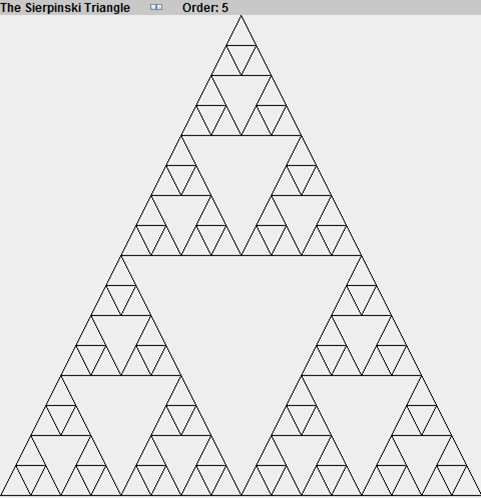
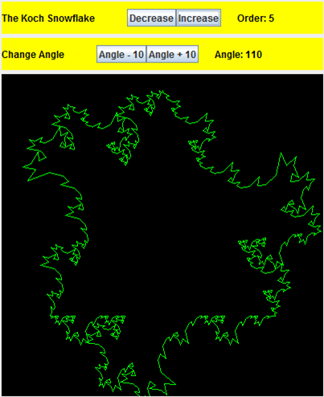

Recursion
Recursion was a topic that I covered at the beginning of AP Computer Science, in September 2014. While recursion is a topic that is briefly covered in the AP Comp Sci curriculum, I was able to cover it in more depth due to my previous knowledge of Java. Some of the projects I was able to create were graphical displays of fractals such as the Sierpinski Triangle and the Koch Snowflake.
 